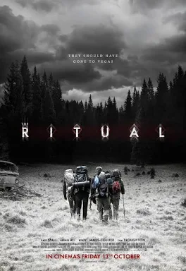
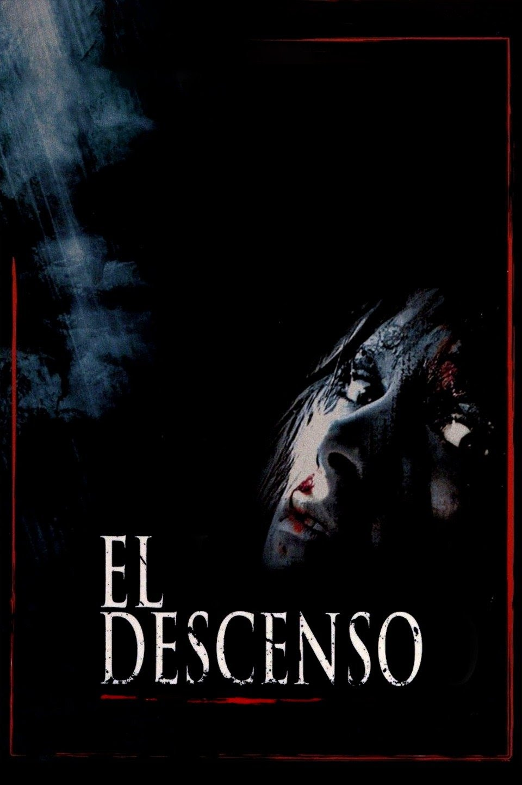
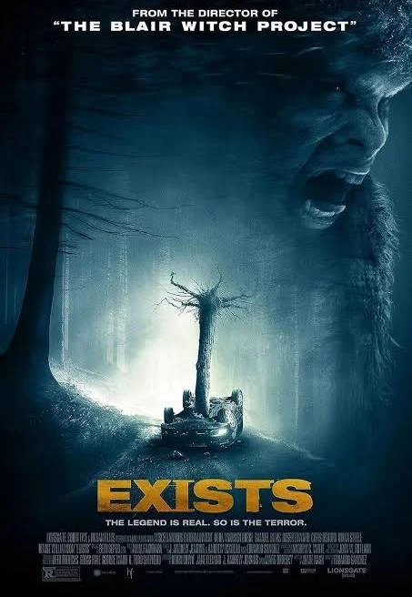
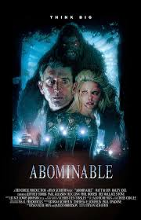
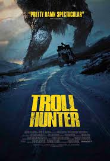

EL YETI
Un grupo de exploradores se adentra en las montañas nevadas
en busca de pruebas de la existencia del mítico Yeti.
Lo que comienza como una expedición científica se convierte
en una lucha por la supervivencia cuando descubren que la
criatura es más real y peligrosa de lo que imaginaban.
- Género: Terror, Suspenso
- Año: 2024
- Duración: 1h 30min
- Director: Brittany Allen
- Productores/as: Christina Bennett Lind, Linc Hand
- Calificación general: 5.8/10
- Clasificación por edad: +16
- Plataformas: Prime Video y Apple TV
Tráiler
REPARTO
BRITTANY ALLEN
CHRISTINA BENNETT LIND
ELIZABETH CAPPUCCINO
GENE GALLENO
JIMMY MEHS
RESEÑAS DESTACADAS
Calificación: 6.0 / 10
SnowHunter dice:
Un terror clásico de supervivencia.
La ambientación en las montañas nevadas es excelente.
Aunque el guion es predecible, logra mantener la tensión.
Brittany Allen destaca en su papel.
25 comentarios
Calificación: 7.0 / 10
MountainFear dice:
El Yeti como nunca lo viste.
La criatura está bien lograda y las escenas de suspenso
cumplen con lo prometido. Ideal para fanáticos del género.
40 comentarios
Calificación: 6.5 / 10
CriticoAnon dice:
Entretenida pero sin sorpresas.
El ritmo es correcto, pero no ofrece nada nuevo.
Se disfruta como película de terror ligera.
30 comentarios
Calificación: 8.0 / 10
NeoCine dice:
Un buen aporte al género.
La dirección logra un clima de tensión constante.
Las escenas en la nieve son visualmente impactantes.
60 comentarios
Calificación: 6.5 / 10
Cinefilo88 dice:
Correcta pero olvidable.
Cumple como entretenimiento de terror,
pero no deja huella.
35 comentarios
RELACIONADOS

THE RITUAL
Calificación: 6.3/10
DURACION: 1h 34min

THE DESCENT
Calificación: 7.2/10
DURACION: 1h 39min

EXISTS
Calificación: 5.2/10
DURACION: 1h 21min

ABOMINABLE
Calificación: 5.0/10
DURACION: 1h 36min
